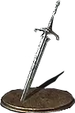

Como estou quase terminado o jogo Dark Souls, quero descobrir qual arma será usada no próximo NG "New Game", onde a dificuldade dos inimigos estará maior em vida e dano.
Para isso estou indeciso entre 8 armas que vou sortear (o sorteio irá ficar de ficar por fora, não estará aqui) e assim saberei qual ordem usar, usarei o Princípio Multiplicativo para saber quantas possibilidades terei para percorrer o jogo com cada arma, sem repetir as mesmas.

Espada de Cavaleiro lothric
Espada Sagrada de Lothric

Espada Grande do Cavaleiro Lupino

Espada Grande

Lamina do Caos
Lança do Caçador de Dragões
Como temos 8 armas, serão 8 tomadas de decisões, e a cada tomada seguinte não será repetida a arma escolhida no caso anterior, sendo que a ordem de tomada de decisão é da esquerda para direita.
8
x
7
x
6
x
5
x
4
x
3
x
2
x
1
Tendo o número total de 40.320 probabilidades.